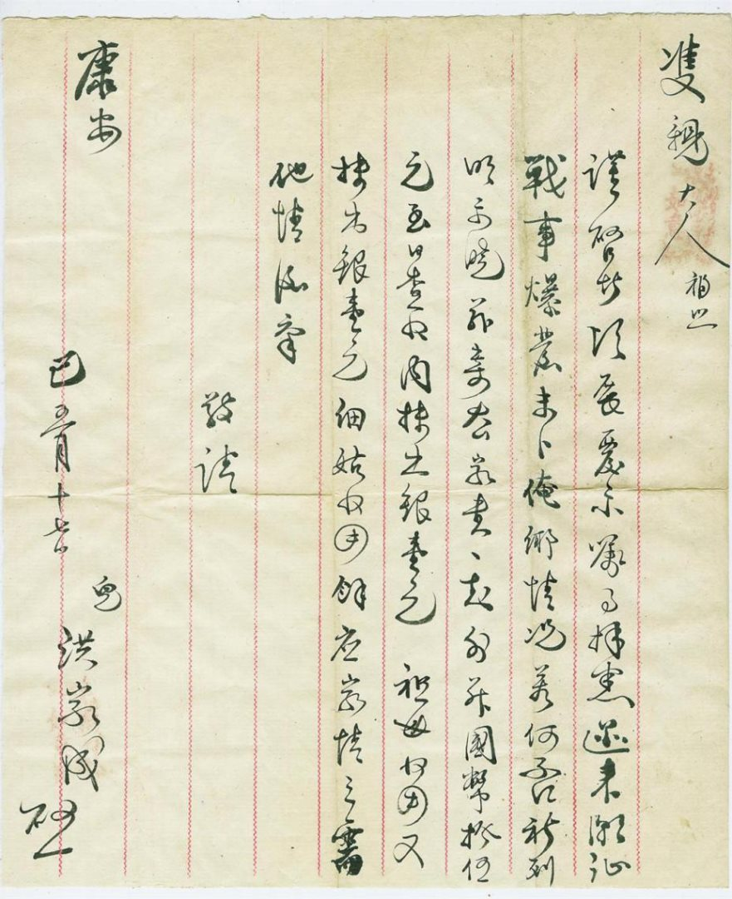
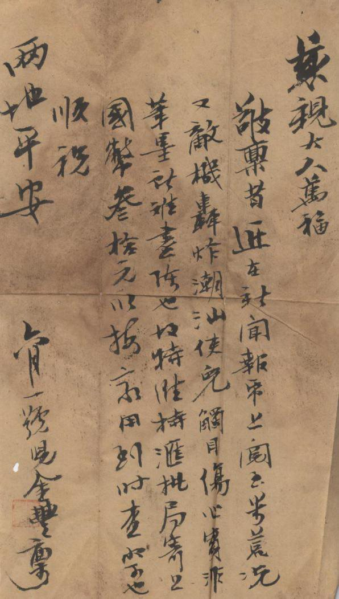
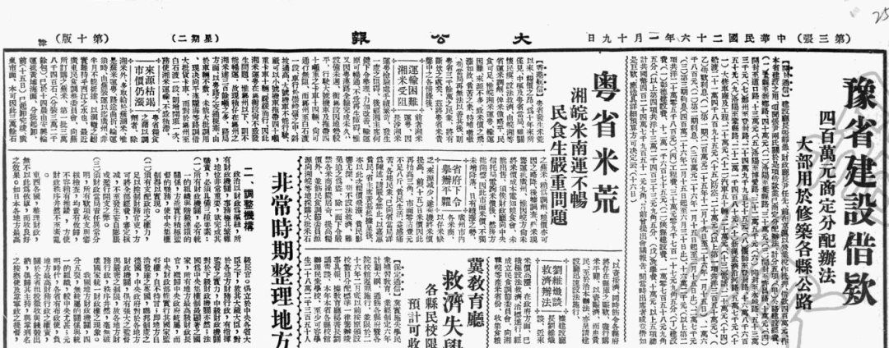

目录
首页

第 五 章
惊闻战事
俺乡如何
抗日战争时期潮汕侨批（三）
"迩来潮汕战事爆发，未卜俺乡情况若何否，祈列明示晓……"
1937 年8 月31 日开始至1939 年6 月21 日汕头沦陷，两年期间，日军飞机共空袭汕头地区397 次，炸死炸伤中国同胞1300 多人。当时，漂泊在外的华侨纷纷写信回家询问家乡情况。在汕头市档案馆馆藏侨批中，就有这样几封侨批，满载着华侨对家人的思念和对家乡境况的担忧。
馆 藏 原 件 · 一
己三月十七日 · 洪家成寄双亲书
双亲大人福安：
谨启者，顷展覆示，嘱事拜悉。迩来潮汕战事爆发，未卜俺乡情况若何否，祈列明示晓。
兹寄去家书一封，外并国币拾伍元，至日查收，内抹出银壹元祖母收用，又抹出银壹元细姑（1）收用，余应家情之需。他情后禀。
敬请康安！
己三月十七日启
儿洪家成
馆 藏 原 件 · 二

六月一号 · 儿金丰寄慈亲书
慈亲大人万福：
敬禀者，近在新闻报纸上阅至米荒（3），况又敌机轰炸潮汕，使儿触目伤心，实非笔墨能难尽陈也。故特维持汇批局寄上国币（2）叁拾元，以报家用，到时查收可也。
顺祝两地平安！
六月一号
儿金丰禀
报 纸 剪 报

中华民国二十六年二月十九日 · 《大公报》（第三版）
《大公报》原文摘录
DA GONG BAO · 1937
"粤省发生米荒以来，粮价之昂，为十年来所仅见。中枢及粤省当局，虽关怀民瘼，设法救济，由皖湘等省运米调剂，俾米价略平，民食可足。惟皖湘米运粤，输运困难，来源不多，致米价之飞涨如故，贫苦之众待补嗷嗷。苟当局再无法以善其后，则粤省三千余万之民众，将有断炊之虞矣！"
（1）细姑：小姑。
（2）国币：国民政府发行的纸币，即中国银行、中央银行、交通银行和中国农民银行发行的纸币。也作"国票""中国票"。
（3）米荒：信（二）中所载"米荒"状况，在民国时期的广东经常发生。据学者研究，民国时期，广东一年两季自产粮食仅够满足全省9 个月的使用，一年缺3 个月的粮食。不足的粮食，一靠洋米接济，二靠国米支持。但1937 年抗日战争爆发后，随着广州、汕头沦陷，洋米输入逐渐减少，甚至完全停止，国米输入也受到外省严格控制，不容易运粤济销，导致连年发生严重粮荒。
"民国26 年（1937 年），潮梅各地发生严重粮荒……潮梅民众遭此打击，恐慌之甚，不言而喻。"
—— 曾伟《民国时期的广东粮食状况》[J].广东史志，1999 年第4 期：2-3 页
由此可见当时"米荒"情况之紧急。紧急的战事加上更加紧急的米荒，危险和饥饿交织，让家乡的情况更是窘迫。
我们可以设想，心怀家乡的华侨在报纸上仔细找寻家乡的消息，看到"汕头"二字的时候心中怦然欣喜，不料看到的却是家乡惨遭轰炸、粮食短缺，前后的落差一定是让他们心情复杂，使得他们更加忧心家人和家乡的近况。
"触目伤心，实非笔墨能难尽陈也"，只能寄上国币叁拾元以报家用，尽微薄之力让家人的境况能有所改善，这正华侨心系桑梓，爱国爱乡情怀的真实体现。